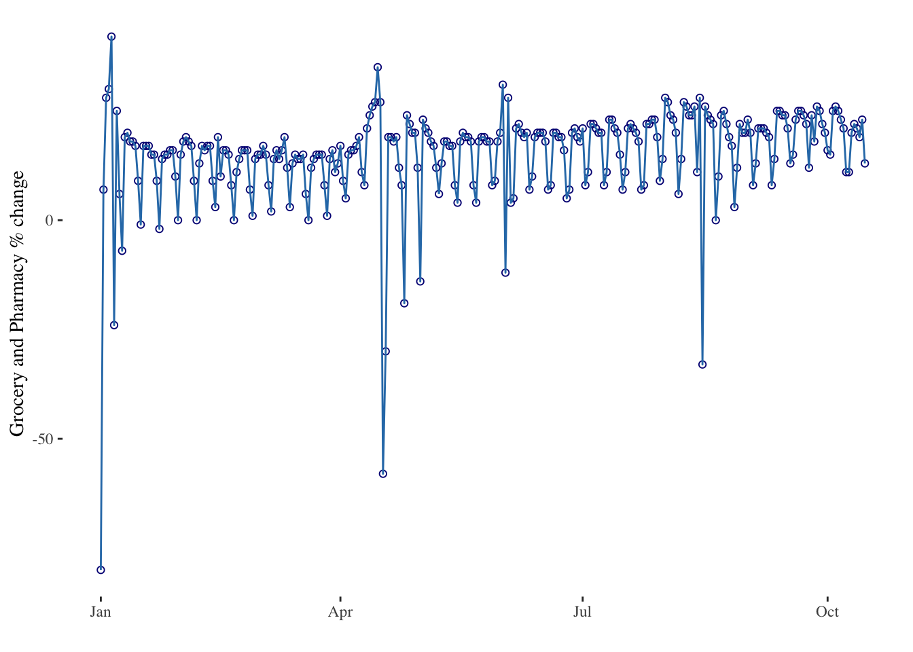
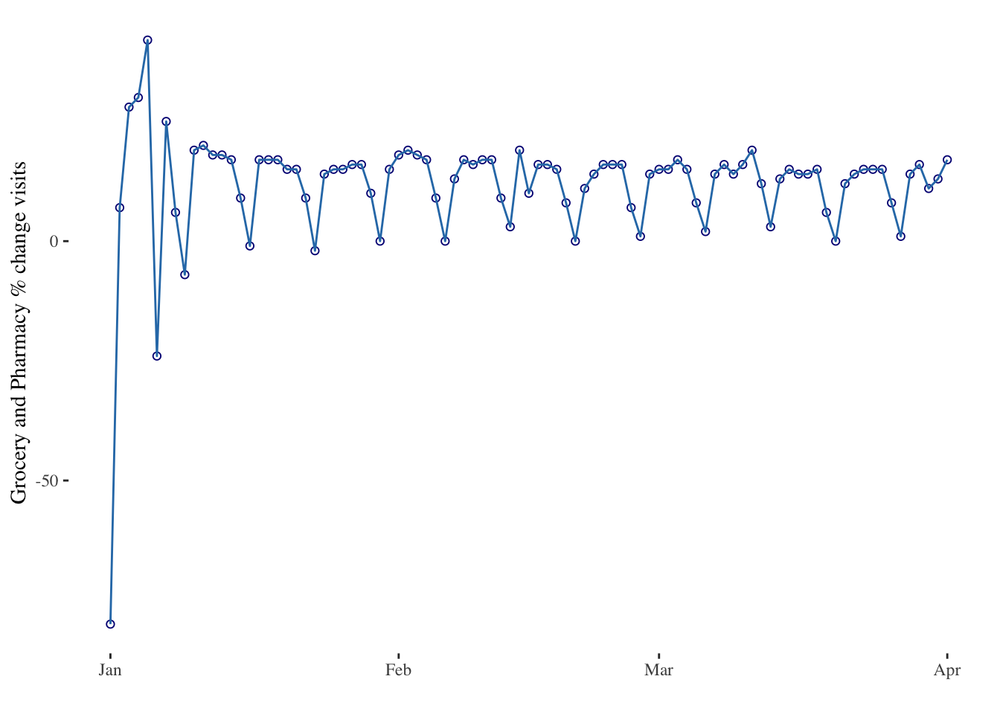
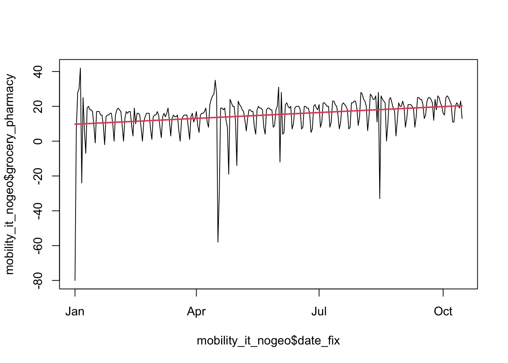
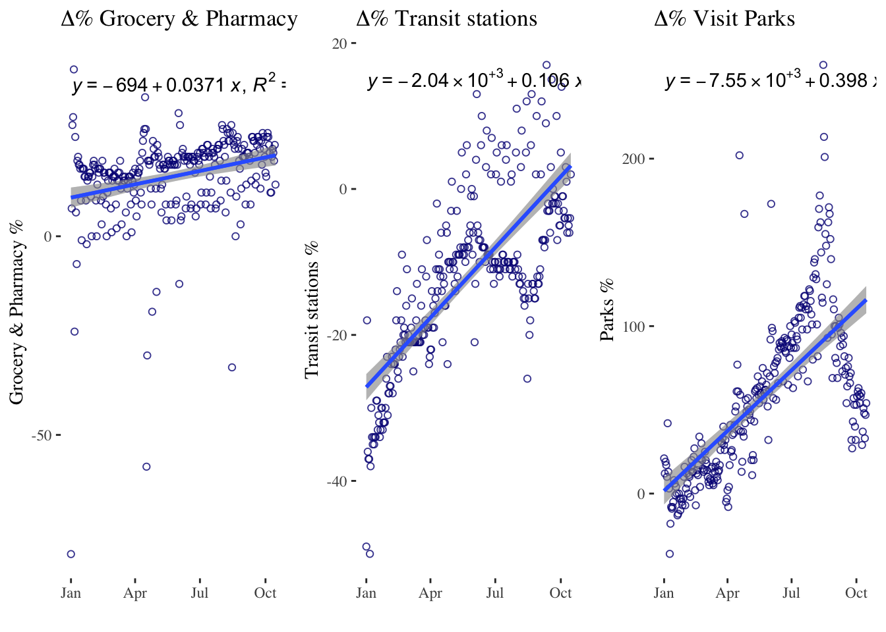
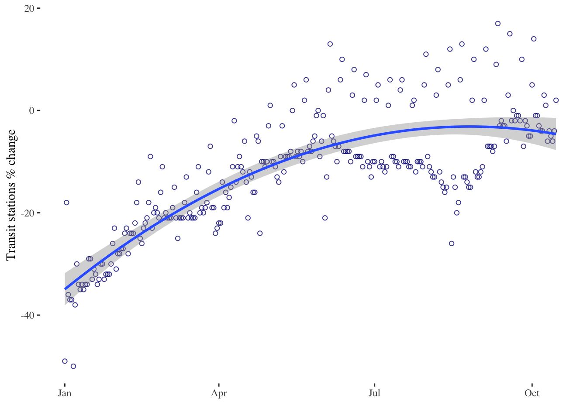
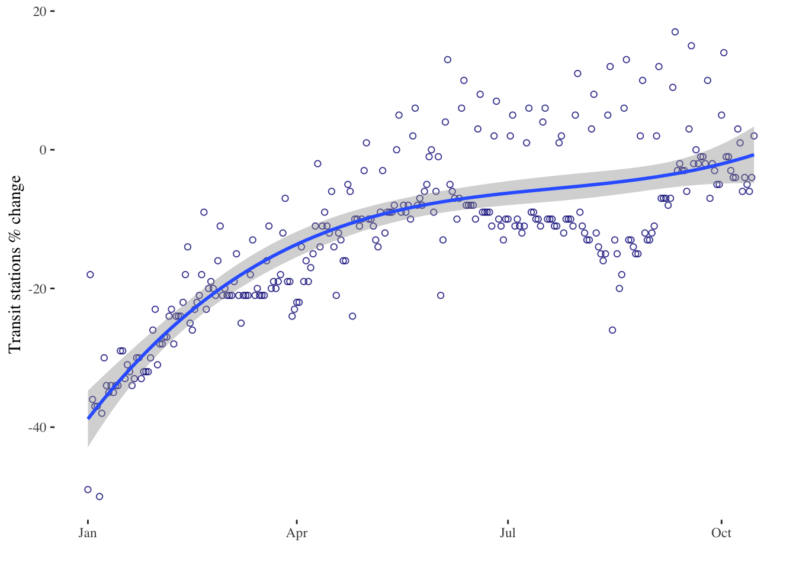
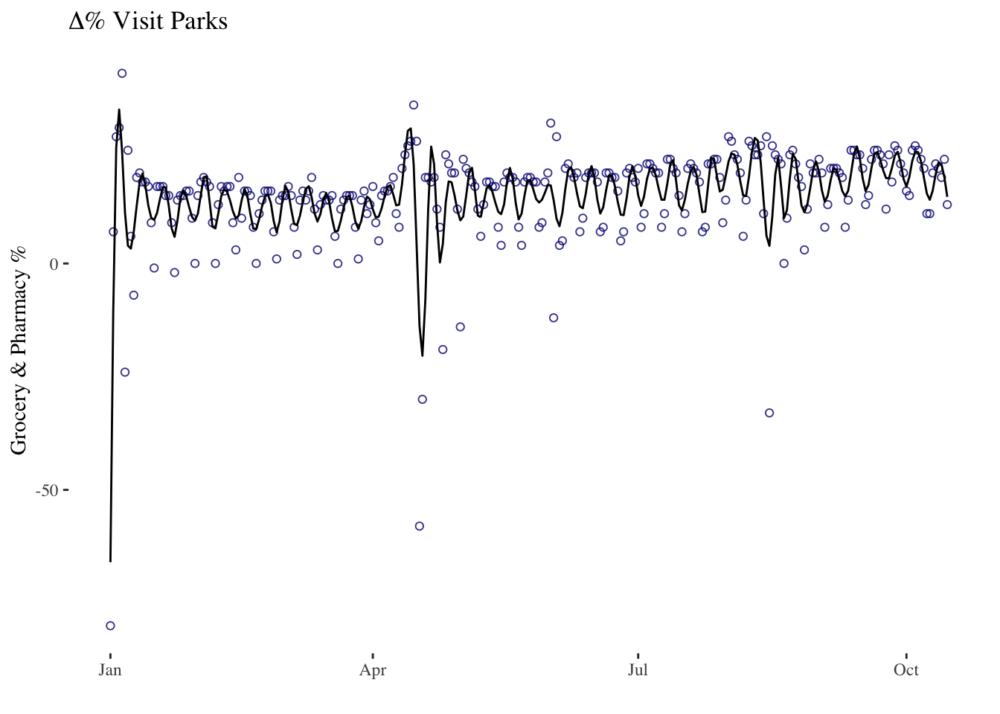
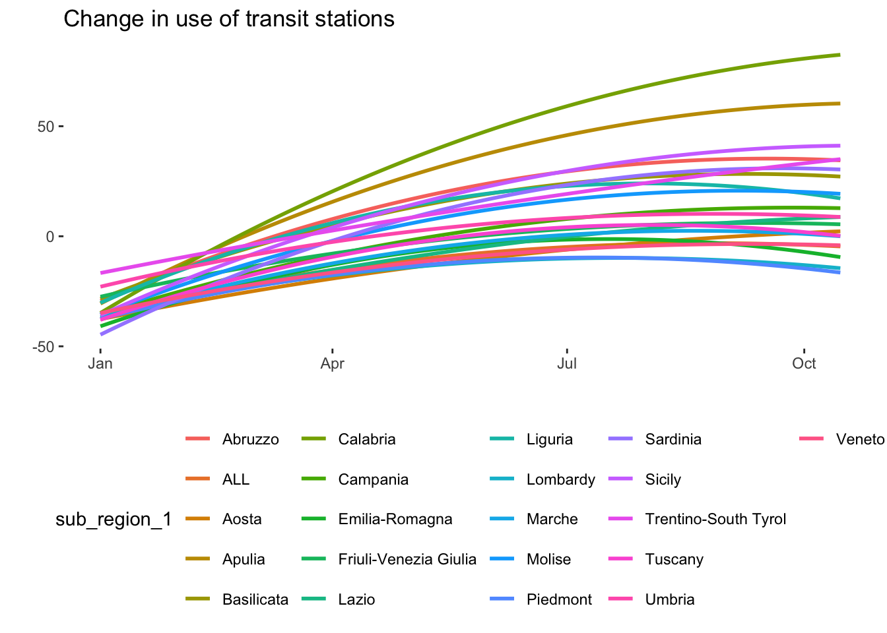
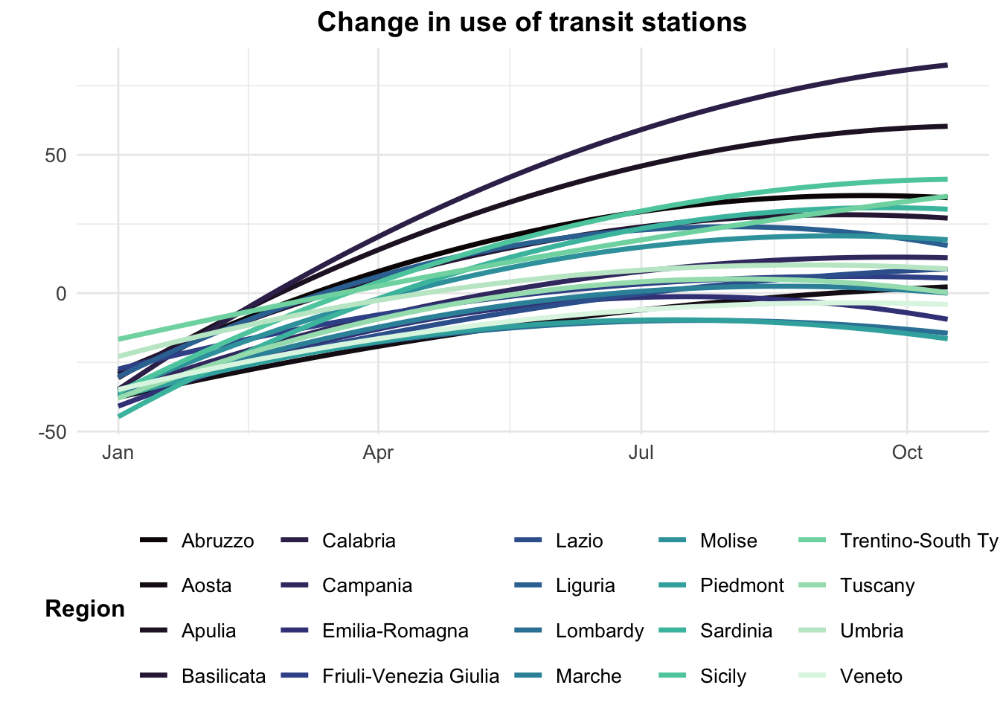
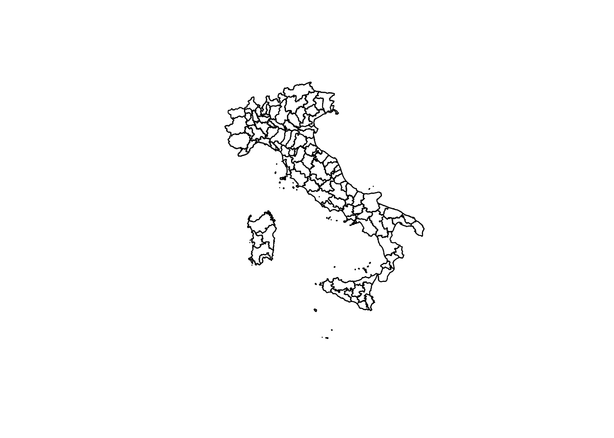

# Data
library(sf)
library(readr)
library(tidyverse)
# Dates and Times
library(lubridate)
# Regression Spline Functions and Classes
library(splines)
# graphs
library(ggplot2)
library(dygraphs)
library(plotly)
library(ggthemes)
library(ggpmisc)
library(gridExtra)
library(viridis)
library(ggformula)
library(ggimage)
library(grid)8 Modelling Time
Time is a critical variable in many areas of research, and its modeling can help us gain insights into underlying phenomena. Timeseries data has proven to be a valuable tool in understanding the COVID-19 pandemic. By analyzing data over time, researchers have been able to track changes in the spread of the virus, the effectiveness of interventions such as social distancing and vaccination campaigns, and the impact of the pandemic on various social and economic indicators. With the increasing availability of digital footprint data, which includes information both of offline behaviour such as visits to grocery shops and parks, as well as online behavior such as internet searches and social media activity, researchers have had new opportunities to understand the pandemic’s impact on individuals and communities (Ugolini et al. 2020; Schleicher 2020) and (Cinelli et al. 2020). These data sources provide insight into people’s attitudes, concerns, and behaviors during the pandemic, as well as their response to interventions and policies. Together, timeseries and digital footprint data offer powerful tools for understanding the complex dynamics of the COVID-19 pandemic and developing effective responses.
This chapter will introduce modelling time descriptively using linear trends, quadratic trends, and splines. It will also provide and introduction to modelling data over time and space.
8.1 Dependencies
8.2 Data
We will use a sample of Google Mobility data. Google has made available Community Mobility data to provide insights into what changed in response to policies aimed at combating COVID-19. The data also has accompanying reports which analyse movement trends over time by geography, across different categories of places such as retail and recreation, groceries and pharmacies, parks, transit stations, workplaces, and residential. Data is available from 2020 and 2022. Community Mobility data is no longer being updated as of 2022-10-15. All historical data will remain publicly available.
Location accuracy and the understanding of categorised places varies from region to region, so it is not recommend the data is used to compare changes between countries, or between regions with different characteristics (e.g. rural versus urban areas). Region that do not have statistically significant levels of data have been left out of the report.
Some important facts about the data:
Changes for each day are compared to a baseline value for that day of the week. The baseline is the median value.
The data that is included in the calculation depends on user settings, connectivity and whether it meets our privacy threshold.
If the privacy threshold isn’t met (when somewhere isn’t busy enough to ensure anonymity) a change for the day is not shown.
For more about this data please see here.
8.3 Modelling Time
First we import the data we will be working with. We will be looking at Google Mobility data for Italy.
mobility_it <- read.csv("data/longitudinal-1/2022_IT_Region_Mobility_Report.csv", header = TRUE)Check out variables in the dataframe
# Check out variables in the dataframe
colnames(mobility_it) [1] "country_region_code"
[2] "country_region"
[3] "sub_region_1"
[4] "sub_region_2"
[5] "metro_area"
[6] "iso_3166_2_code"
[7] "census_fips_code"
[8] "place_id"
[9] "date"
[10] "retail_and_recreation_percent_change_from_baseline"
[11] "grocery_and_pharmacy_percent_change_from_baseline"
[12] "parks_percent_change_from_baseline"
[13] "transit_stations_percent_change_from_baseline"
[14] "workplaces_percent_change_from_baseline"
[15] "residential_percent_change_from_baseline" Long data vs. Wide data
Long data and wide data are two different formats used to store and organize data in a tabular form. Wide data is a format where each variable is stored in a separate column, and each observation or time point is stored in a separate row. This format is often useful when the number of variables is small compared to the number of observations, and is often used for descriptive statistics and exploratory data analysis.
dates A B
1 2022-01-01 -0.56047565 1.2240818
2 2022-01-02 -0.23017749 0.3598138
3 2022-01-03 1.55870831 0.4007715
4 2022-01-04 0.07050839 0.1106827
5 2022-01-05 0.12928774 -0.5558411
6 2022-01-06 1.71506499 1.7869131
7 2022-01-07 0.46091621 0.4978505
8 2022-01-08 -1.26506123 -1.9666172
9 2022-01-09 -0.68685285 0.7013559
10 2022-01-10 -0.44566197 -0.4727914Long data, on the other hand, is a format where each variable is represented by two or more columns: one column for the variable name and another for the variable values. This format is often useful when we have many variables or when we want to perform statistical analysis.
dates series value
1 2022-01-01 A -0.56047565
2 2022-01-01 B 1.22408180
3 2022-01-02 A -0.23017749
4 2022-01-02 B 0.35981383
5 2022-01-03 A 1.55870831
6 2022-01-03 B 0.40077145
7 2022-01-04 A 0.07050839
8 2022-01-04 B 0.11068272
9 2022-01-05 A 0.12928774
10 2022-01-05 B -0.55584113
11 2022-01-06 A 1.71506499
12 2022-01-06 B 1.78691314
13 2022-01-07 A 0.46091621
14 2022-01-07 B 0.49785048
15 2022-01-08 A -1.26506123
16 2022-01-08 B -1.96661716
17 2022-01-09 A -0.68685285
18 2022-01-09 B 0.70135590
19 2022-01-10 A -0.44566197
20 2022-01-10 B -0.47279141Both wide and long data formats have their own advantages and disadvantages, and the choice between them often depends on the specific data and the analysis that is planned. Transforming data from one format to another is a common task in data processing and analysis, and can be accomplished using various data manipulation tools in R, such as tidyr and reshape2 packages. Look back at the Italian google mobility data to check which format it is in.
Date format
Time series aim to study the evolution of one or several variables through time. Several packages that are part of the tidyverse family will help you analyse time series data in R. The lubridatepackage is your best friend to deal with the date format. ggplot2 will allow you to plot it efficiently. dygraphs will also help build attractive interactive charts.
Building time series requires the time variable to be at the date format. The first step of your analysis must be to double check that R read your data correctly, i.e. at the date format. This is possible thanks to the str() function:
# Checking date format
str(mobility_it)'data.frame': 36576 obs. of 15 variables:
$ country_region_code : chr "IT" "IT" "IT" "IT" ...
$ country_region : chr "Italy" "Italy" "Italy" "Italy" ...
$ sub_region_1 : chr "ALL" "ALL" "ALL" "ALL" ...
$ sub_region_2 : chr "" "" "" "" ...
$ metro_area : logi NA NA NA NA NA NA ...
$ iso_3166_2_code : chr "" "" "" "" ...
$ census_fips_code : logi NA NA NA NA NA NA ...
$ place_id : chr "ChIJA9KNRIL-1BIRb15jJFz1LOI" "ChIJA9KNRIL-1BIRb15jJFz1LOI" "ChIJA9KNRIL-1BIRb15jJFz1LOI" "ChIJA9KNRIL-1BIRb15jJFz1LOI" ...
$ date : chr "01/01/2022" "02/01/2022" "03/01/2022" "04/01/2022" ...
$ retail_and_recreation_percent_change_from_baseline: int -65 -27 -13 -13 -10 -30 -20 -27 -39 -22 ...
$ grocery_and_pharmacy_percent_change_from_baseline : int -80 7 28 30 42 -24 25 6 -7 19 ...
$ parks_percent_change_from_baseline : int 21 12 19 17 10 42 13 3 -36 -18 ...
$ transit_stations_percent_change_from_baseline : int -49 -18 -36 -37 -37 -50 -38 -30 -34 -35 ...
$ workplaces_percent_change_from_baseline : int -69 -13 -42 -41 -42 -78 -48 -27 -13 -21 ...
$ residential_percent_change_from_baseline : int 13 6 13 13 12 23 16 9 10 10 ...This is already looking fine in the google mobility data, but in many other cases the lubridate package is such a life saver. It offers several function which name are composed by 3 letters: year (y), month (m) and day (d). Have a look at lubridate cheat sheet to see more about converting time variables to useful formats. There is also the anytime() function in the anytime package whose sole goal is to automatically parse strings as dates regardless of the format.
#Convert the date column to a date format using the dmy() function
mobility_it$date_fix <- dmy(mobility_it$date) Tidy up some variables.
# Rename variables
mobility_it <- mobility_it %>%
rename(grocery_pharmacy = grocery_and_pharmacy_percent_change_from_baseline,
parks_percent_change_from_baseline = parks_percent_change_from_baseline,
transit = transit_stations_percent_change_from_baseline)Initial time-series plotting with ggplot2
Let’s start easy by keeping only data for the whole of Italy.
# Filter the dataframe to keep only the rows for all of Italy
mobility_it_nogeo <-filter(mobility_it, sub_region_1 == "ALL")ggplot2 offers great features when it comes to visualize time series. The date format will be recognized automatically, resulting in a neat x axis labels.
# Most basic bubble plot - uncomment to visualise
#timeseries1 <- ggplot(data = mobility_it_nogeo, aes(x=date_fix, y=grocery_pharmacy)) + geom_point()
#timeseries1
# Adding lines and starting to clean up graph
timeseries2 <- ggplot(data = mobility_it_nogeo, aes(x=date_fix, y=grocery_pharmacy)) +
geom_point(color="#061685", shape=1) +
geom_line(color="#2c7bb6") +
theme_tufte() +
xlab("") +
ylab("Grocery and Pharmacy % change")
timeseries2
The ggplot2 package recognizes the date format and automatically uses a specific type of X axis. If the time variable isn’t at the date format, this won’t work. Always check with str(data) how variables are understood by R. The scale_x_data() makes it a breeze to customize those labels.
# Use the limit option of the scale_x_date() function to select a time frame in the data:
timeseries3 <- ggplot(data = mobility_it_nogeo, aes(x=date_fix, y=grocery_pharmacy)) +
geom_point(color="#061685", shape=1) +
geom_line( color="#2c7bb6") +
xlab("") +
ylab("Grocery and Pharmacy % change visits") +
theme_tufte() +
scale_x_date(limit=c(as.Date("2022-01-01"),as.Date("2022-04-01"))) # Limiting between two dates
timeseries3
plotly is also great to turn the resulting chart interactive in one more line of code. With the ggplotly() function you can hover circles to get a tooltip, or select an area of interest for zooming. You can zoom by selecting an area of interest. Hover over the line to get exact time and value. Export to a widget with htmlwidgets.
# Usual chart
timeseries3bis <- ggplot(data = mobility_it_nogeo, aes(x=date_fix, y=grocery_pharmacy)) +
geom_point(color="#061685", shape=1) +
geom_line(color="#2c7bb6") +
theme_tufte() +
xlab("") +
ylab("Grocery and Pharmacy % change")
# Turn it interactive with ggplotly
timeseries_interactive <- ggplotly(timeseries3bis)
timeseries_interactive# Of course this needs more cleaning to be a final output
# To save the widget use the library(htmlwidgets)
# saveWidget(p, file=paste0( getwd(), "/HtmlWidget/ggplotlyAreachart.html"))Linear trends
Now let’s try to model trends in the data. Let’s first consider linear trends. Linear trends are the simplest way to model time as a quantitative variable. We can represent time as a series of evenly spaced points on a graph, and then fit a straight line to those points. The slope of the line tells us the rate at which the variable is changing over time. For example, if we are measuring population counts over time, a positive slope would indicate that a population increase, and a negative slope would indicate a population decrease.
# Estimate linear regression model
linear_model <- lm(grocery_pharmacy ~ date_fix, mobility_it_nogeo)
# A simple plot line
plot(mobility_it_nogeo$date_fix,
mobility_it_nogeo$grocery_pharmacy,
type = "l")
lines(mobility_it_nogeo$date_fix,
predict(linear_model),
col = 2,
lwd = 2)
# Extract coefficients of model and print
my_coef <- coef(linear_model)
my_coef (Intercept) date_fix
-694.27809786 0.03706687 # Extract equation of model and print
my_equation <- paste("y =",
coef(linear_model)[[1]],
"+",
coef(linear_model)[[2]],
"* x")
my_equation [1] "y = -694.278097860568 + 0.037066871224827 * x"Let’s plot this with ggplot to fit our line through our points. We can use the package ggpmisc to add the equation and R2 with stat_poly_line() and stat_poly_eq.
# Using geom_smooth() for the linear fit
timeseries4a <- ggplot(data = mobility_it_nogeo, aes(x=date_fix, y=grocery_pharmacy)) +
geom_point(color="#061685", shape=1, alpha = 0.8) +
geom_smooth(formula = y ~ x, method="lm") + # linear regression
xlab("") +
ylab("Grocery & Pharmacy %") +
stat_poly_line() +
stat_poly_eq(use_label(c("eq", "R2"))) +
theme_tufte() +
ggtitle(expression(paste(Delta, "% Grocery & Pharmacy")))
timeseries4b <- ggplot(data = mobility_it_nogeo, aes(x=date_fix, y=transit)) +
geom_point(color="#061685", shape=1, alpha = 0.8) +
geom_smooth(formula = y ~ x, method="lm") + #This is where your linear regression is
xlab("") +
ylab("Transit stations %") +
stat_poly_line() +
stat_poly_eq(use_label(c("eq", "R2"))) +
theme_tufte() +
ggtitle(expression(paste(Delta, "% Transit stations")))
timeseries4c <- ggplot(data = mobility_it_nogeo, aes(x=date_fix, y=parks_percent_change_from_baseline)) +
geom_point(color="#061685", shape=1, alpha = 0.8) +
geom_smooth(formula = y ~ x, method="lm") + #This is where your linear regression is
xlab("") +
ylab("Parks %") +
stat_poly_line() +
stat_poly_eq(use_label(c("eq", "R2"))) +
theme_tufte() +
ggtitle(expression(paste(Delta, "% Visit Parks")))
grid.arrange(timeseries4a, timeseries4b, timeseries4c, ncol=3)
Alternatively you can use the ols() function aswell followed by the stat_function(). See here for more details.
Linear trends have some limitations. In many cases, the relationship between time and the variable we are measuring is not linear, and fitting a straight line may not capture the true nature of the relationship. In such cases, we may need to consider a quadratic trend.
Quadratic trends
Quadratic trends model time as a second-degree polynomial, which allows for a curved relationship between time and the variable we are measuring. Quadratic trends can capture more complex patterns in the data than linear trends, such as a gradual increase followed by a gradual decrease. For example, if we are measuring the number of COVID-19 cases over time, a quadratic trend may capture the initial exponential growth, followed by a flattening out of the curve.
However, quadratic trends also have some limitations. They assume that the relationship between time and the variable we are measuring is symmetrical, which may not always be the case. In addition, they can be difficult to interpret, as the coefficient for the quadratic term does not have a straightforward interpretation.
timeseries5 <- ggplot(data = mobility_it_nogeo, aes(x=date_fix, y=transit)) +
geom_point(color="#061685", shape=1, alpha = 0.8) +
geom_smooth(formula = y ~ poly(x,2), method="lm", se = T, level = 0.99) + # 2nd order polynomial & adjusting level of the confidence interval
xlab("") +
ylab("Transit stations % change") +
theme_tufte()
timeseries5
timeseries6 <- ggplot(data = mobility_it_nogeo, aes(x=date_fix, y=transit)) +
geom_point(color="#061685", shape=1, alpha = 0.8) +
geom_smooth(formula = y ~ poly(x,3), method="lm", se = T, level = 0.99) + # 3rd order polynomial & adjusting level of the confidence interval
xlab("") +
ylab("Transit stations % change") +
theme_tufte()
timeseries6
Splines
Finally, we have splines. Splines are a more flexible way to model time as a quantitative variable. Splines allow us to fit a piecewise function to the data, where the function is a series of connected polynomial segments. Each segment captures a different part of the relationship between time and the variable we are measuring. Splines can capture more complex patterns in the data than linear or quadratic trends, and they can be customized to fit the specific shape of the relationship we are trying to model.
However, splines also have some limitations. They can be computationally intensive, and the choice of the number and location of the knots (i.e., the points where the polynomial segments connect) can have a big impact on the results. Splines are useful when the underlying function is complex or unknown, and can be used for a variety of applications, including curve fitting, data smoothing, and prediction.
In R, you can plot x vs y using the plot() function. To plot a spline, you can use the spline() function to generate the points for the curve, and then plot the curve using the lines() function.
timeseries7 <- ggplot(data = mobility_it_nogeo, aes(x=date_fix, y=grocery_pharmacy)) +
geom_point(color="#061685", shape=1, alpha = 0.8) +
ggformula::stat_spline() + # spline
xlab("") +
ylab("Grocery & Pharmacy %") +
theme_tufte() +
ggtitle(expression(paste(Delta, "% Visit Parks")))
timeseries7
Linear trends, quadratic trends, and splines are all ways to model time as a quantitative variable, each with their own strengths and weaknesses. The choice of method will depend on the specific research question and the shape of the relationship between time and the variable we are measuring. You can find more on descriptive timeseries analysis here.
8.4 Modelling Time and Space
We can also examine the heterogeneity in the data by region. Some regions in Italy were had many more COVID-19 cases than others.
# Mobility data by region over time
timeseries_all_1 <- ggplot(data = mobility_it, aes(x=date_fix, y=transit, color = sub_region_1)) +
# geom_point(alpha = 0.8) +
geom_smooth(method="lm",formula = y ~ poly(x,2), se=F) +
theme(
legend.position = "bottom",
panel.background = element_rect(fill = NA)) +
xlab("") +
ylab("") +
ggtitle("Change in use of transit stations")
# Initial Graph
timeseries_all_1 
mobility_it_filtered <- mobility_it %>%
filter(sub_region_1 != "ALL")
# Mobility data by region over time with some edits
timeseries_all_2 <- ggplot(data = mobility_it_filtered, aes(x = date_fix, y = transit, color = sub_region_1)) +
geom_smooth(method = "lm", formula = y ~ poly(x, 2), se = F, size = 1.2) +
scale_color_viridis(discrete = TRUE, option="mako") +
theme_minimal() +
theme(
legend.position = "bottom",
plot.title = element_text(size = 14, hjust = 0.5, face = "bold"),
axis.text = element_text(size = 10),
axis.title = element_text(size = 12, face = "bold"),
legend.text = element_text(size = 10),
legend.title = element_text(size = 12, face = "bold")
) +
labs(
x = "",
y = "",
title = "Change in use of transit stations",
color = "Region"
)
timeseries_all_2
These graphs would need further work. We could for example divide the data between North, Centre and Southern Italy. Let’s load the geojson of italian regions and plot the data.
# Add the polygons of Italy to the environment
italy_iso3166 <- st_read("data/longitudinal-1/italy_projected_simplified.geojson")Reading layer `italy_projected_simplified' from data source
`/Users/franciscorowe/Dropbox/Francisco/uol/teaching/envs418/202324/r4ps/data/longitudinal-1/italy_projected_simplified.geojson'
using driver `GeoJSON'
Simple feature collection with 124 features and 4 fields
Geometry type: MULTIPOLYGON
Dimension: XY
Bounding box: xmin: 1313364 ymin: 3933695 xmax: 2312062 ymax: 5220353
Projected CRS: Monte Mario / Italy zone 1# create a simple plot
plot(italy_iso3166$geometry)
Now let’s join the data by regional code.
# Join by regional code
italy_iso3166_tidy <- italy_iso3166 %>%
left_join(mobility_it, by=c("ISO3166.2"="iso_3166_2_code"))
# check the first rows of the merged data table
# head(italy_iso3166_tidy)To start with, we can plot the data statically using ggplot.
# One point in time
italy_sf_subset_1 <- italy_iso3166_tidy %>% filter(date_fix == "2022-01-01")
italy_sf_subset_2 <- italy_iso3166_tidy %>% filter(date_fix == "2022-02-01")
italy_sf_subset_3 <- italy_iso3166_tidy %>% filter(date_fix == "2022-03-01")
italy_sf_subset_4 <- italy_iso3166_tidy %>% filter(date_fix == "2022-04-01")
italy_sf_subset_5 <- italy_iso3166_tidy %>% filter(date_fix == "2022-05-01")
italy_sf_subset_6 <- italy_iso3166_tidy %>% filter(date_fix == "2022-06-01")
#This may take some time to load
g1 <- ggplot() +
geom_sf(data = italy_sf_subset_1, aes(fill = transit, geometry = geometry)) +
scale_fill_gradient2(low = "#d7191c", mid = "white", high = "darkblue",
midpoint = 0, guide = "colourbar") +
theme_void()
g2 <- ggplot() +
geom_sf(data = italy_sf_subset_2, aes(fill = transit, geometry = geometry)) +
scale_fill_gradient2(low = "#d7191c", mid = "white", high = "darkblue",
midpoint = 0, guide = "colourbar") +
theme_void()
g3 <- ggplot() +
geom_sf(data = italy_sf_subset_3, aes(fill = transit, geometry = geometry)) +
scale_fill_gradient2(low = "#d7191c", mid = "white", high = "darkblue",
midpoint = 0, guide = "colourbar") +
theme_void()
g4 <- ggplot() +
geom_sf(data = italy_sf_subset_4, aes(fill = transit, geometry = geometry)) +
scale_fill_gradient2(low = "#d7191c", mid = "white", high = "darkblue",
midpoint = 0, guide = "colourbar") +
theme_void()
g5 <- ggplot() +
geom_sf(data = italy_sf_subset_5, aes(fill = transit, geometry = geometry)) +
scale_fill_gradient2(low = "#d7191c", mid = "white", high = "darkblue",
midpoint = 0, guide = "colourbar") +
theme_void()
g6 <- ggplot() +
geom_sf(data = italy_sf_subset_6, aes(fill = transit, geometry = geometry)) +
scale_fill_gradient2(low = "#d7191c", mid = "white", high = "darkblue",
midpoint = 0, guide = "colourbar") +
theme_void()
grid.arrange(g1, g2, g3, g4, g5, g6, ncol = 3,
top = textGrob("Change in use of transit by Italian Region", gp=gpar(fontsize=18,font=2)))
Plotting time and space interactively is more complex. There are quite a few examples of how to visualise data over space and time here.
8.5 Questions
For the assignment, we will continue to focus on the United Kingdom as our geographical area of analysis. For this section, we will use Google Mobility data for the UK for 2021. It has the same format as the Google Mobility data for Italy used in this chapter. During this year the UK underwent a third national lockdown, limitations of gatherings and more. For details on the timeline you can have a look here.
Start by loading both the csv and geojsons.
mobility_gb <- read.csv("data/longitudinal-1/2021_GB_Region_Mobility_Report.csv", header = TRUE)
uk_iso3166 <- st_read("data/longitudinal-1/uk_projected_simplified.geojson")Reading layer `uk_projected_simplified' from data source
`/Users/franciscorowe/Dropbox/Francisco/uol/teaching/envs418/202324/r4ps/data/longitudinal-1/uk_projected_simplified.geojson'
using driver `GeoJSON'
Simple feature collection with 245 features and 4 fields (with 16 geometries empty)
Geometry type: MULTIPOLYGON
Dimension: XY
Bounding box: xmin: -50462.93 ymin: 5270.466 xmax: 655975.3 ymax: 1219809
Projected CRS: OSGB36 / British National GridChose three variables to focus on and plot them together using
ggplot. Discuss what format the data and if you can see any shocks over time by referring to the UK COVID-19 timeline.Chose one variable and fit a linear, quadratic or spline model. Justify why you think this is the most appropriate and how you would interpret the resulting equation.
Model both time and space: use
ggplotto create a graph of the data by region or other geographical area. You can chose what to focus on here and do not necessarily need to use all the geographical classifications available to you. Analyse the trends that appear in your plot.Create a static or interactive map (bonus points) of your choice from the data.
Analyse and discuss what insights you obtain into people’s attitudes, concerns, and behaviors during the pandemic, as well as their response to interventions and policies.
Cinelli, Matteo, Walter Quattrociocchi, Alessandro Galeazzi, Carlo Michele Valensise, Emanuele Brugnoli, Ana Lucia Schmidt, Paola Zola, Fabiana Zollo, and Antonio Scala. 2020. “The COVID-19 Social Media Infodemic.” Scientific Reports 10 (1): 1–10.
Schleicher, Andreas. 2020. “The Impact of COVID-19 on Education: Insights from" Education at a Glance 2020".” OECD Publishing.
Ugolini, Francesca, Luciano Massetti, Pedro Calaza-Martı́nez, Paloma Cariñanos, Cynnamon Dobbs, Silvija Krajter Ostoić, Ana Marija Marin, et al. 2020. “Effects of the COVID-19 Pandemic on the Use and Perceptions of Urban Green Space: An International Exploratory Study.” Urban Forestry & Urban Greening 56: 126888.